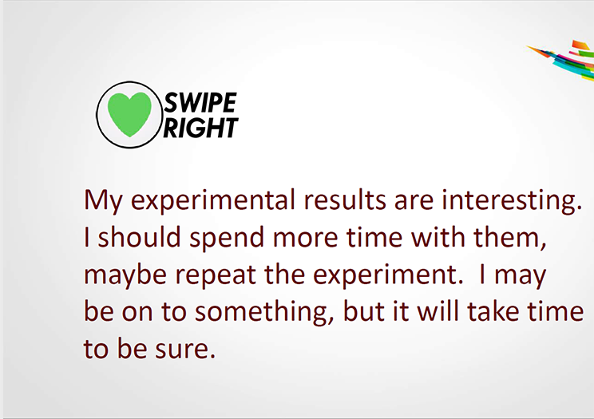

P-Values
Adam J Sullivan
Assistant Professor of Biostatistics
Brown University
Hypothesis Test on Proportions
Attrition Data
- We will look at the attrition data.
- This is part of the
rsamplepackage. - You can call it with the following code:
attr_pop <- rsample::attrition
Attrition Data
- This data is about employee attrition.
- Many times people are interested in looking into attrition rates as it could be a sign of unhealthy work environments.
- Attrition can happen for normal reasons like retirement or it can be through resignation, ...
Income of those who left vs stayed
t.test(MonthlyIncome~Attrition, data=attr_pop)
Income of those who left vs stayed
##
## Welch Two Sample t-test
##
## data: MonthlyIncome by Attrition
## t = 7.4826, df = 412.74, p-value = 4.434e-13
## alternative hypothesis: true difference in means is not equal to 0
## 95 percent confidence interval:
## 1508.244 2583.050
## sample estimates:
## mean in group No mean in group Yes
## 6832.740 4787.093
Another Question
- Among employees do female employees make up 1/2 of the company?
- Among those who leave, is there a difference in males vs females?
Coding Tables
attr_pop %>%
group_by(Gender, Attrition) %>%
summarise(n = n()) %>%
mutate(freq = n/sum(n))
Coding Tables
## # A tibble: 4 x 4
## # Groups: Gender [2]
## Gender Attrition n freq
## <fct> <fct> <int> <dbl>
## 1 Female No 501 0.852
## 2 Female Yes 87 0.148
## 3 Male No 732 0.830
## 4 Male Yes 150 0.170
Coding Tables
attr_pop %>%
group_by(Attrition, Gender) %>%
summarise(n = n()) %>%
mutate(freq = n/sum(n))
Coding Tables
## # A tibble: 4 x 4
## # Groups: Gender [2]
## Gender Attrition n freq
## <fct> <fct> <int> <dbl>
## 1 Female No 501 0.852
## 2 Female Yes 87 0.148
## 3 Male No 732 0.830
## 4 Male Yes 150 0.170
Coding Tables
## # A tibble: 4 x 4
## # Groups: Gender [2]
## Gender Attrition n freq
## <fct> <fct> <int> <dbl>
## 1 Female No 501 0.852
## 2 Female Yes 87 0.148
## 3 Male No 732 0.830
## 4 Male Yes 150 0.170
## # A tibble: 4 x 4
## # Groups: Attrition [2]
## Attrition Gender n freq
## <fct> <fct> <int> <dbl>
## 1 No Female 501 0.406
## 2 No Male 732 0.594
## 3 Yes Female 87 0.367
## 4 Yes Male 150 0.633
Hypothesis Test on Proportions
- We have proportions and this is different from means.
- Proportions are from a binomial distribution.
- This means we can actually use the z distribution.
- When we assume \(H_0\) we assume a probability which gives us the true variance.
Hypothesis Test on Proportions
\[z = \dfrac{\hat{p} - \pi_0}{\sqrt{\dfrac{\pi_0(1-\pi_0)}{n}}}\]
- Where
- \(z\) is the test statistic which is normally distributed.
- \(\hat{p}\) is the sample proportion estimate.
- \(\pi_0\) is the proportion under the Null hypothesis.
Are Female employees 50% of the employees?
\[H_0:\pi=0.5 \text{ vs } H_1: \pi\ne0.5\]
- We can do this in R
Proportion Test in R
table(attr_pop$Gender) %>% prop.table()
##
## Female Male
## 0.4 0.6
Proportion Test in R
table(attr_pop$Gender) %>%
prop.test()
##
## 1-sample proportions test with continuity correction
##
## data: ., null probability 0.5
## X-squared = 58.401, df = 1, p-value = 2.138e-14
## alternative hypothesis: true p is not equal to 0.5
## 95 percent confidence interval:
## 0.3749127 0.4256156
## sample estimates:
## p
## 0.4
Conclusions
- We can see that there is evidence that females do not make up half of the company.
- p-value <0.0001
- 95% CI 0.37, 0.43)
- Mean: 0.4
Note
- R did the test on the smaller proportion group.
- You can force R to look at the larger group as well:
Proportion test on Males
table(attr_pop$Gender) %>%
rev() %>%
prop.test()
##
## 1-sample proportions test with continuity correction
##
## data: ., null probability 0.5
## X-squared = 58.401, df = 1, p-value = 2.138e-14
## alternative hypothesis: true p is not equal to 0.5
## 95 percent confidence interval:
## 0.5743844 0.6250873
## sample estimates:
## p
## 0.6
Comparing 2 Proportions
- We can then look at the difference in proportion of attrition with females vs males.
- This can be done with a proportion test as well.
\[z = \dfrac{\hat{p}_1 - \hat{p}_2}{\sqrt{\hat{p}(1-\hat{p})\left(\dfrac{1}{n_1} + \dfrac{1}{n_2}\right)}}\]
Comparing 2 Proportions
table(attr_pop$Gender, attr_pop$Attrition) %>%
prop.test()
Comparing 2 Proportions
##
## 2-sample test for equality of proportions with continuity
## correction
##
## data: .
## X-squared = 1.117, df = 1, p-value = 0.2906
## alternative hypothesis: two.sided
## 95 percent confidence interval:
## -0.01723399 0.06145168
## sample estimates:
## prop 1 prop 2
## 0.8520408 0.8299320
Conclusions
- There does not seem to be a difference based on employees leaving of different genders.
- p-value: 0.29
p-Values Clarified
Informally, a p-value is the probability under a specified statistical model that a statistical summary of the data (for example, the sample mean difference between 2 compared groups) would be equal to or more extremee than its observed value
- (ASA Statement)
p-value Clarified
That Definition is about as clear as mud.
- Christie Aschwanden, lead writer for science, FiveThirtyEight.
Clearer than This
The simplest general definition of a p-value of a point null hypothesis that I know of is as follows. Suppose the hypothesis is that \(\mathbb{P}\) is the probability distribution of the data \(X\), which takes on values in the measurable space \(\chi\). Let \(\{R_\alpha\}_{\alpha\in[0,1]}\) be a collection of \(\mathbb{P}\)-measurble subsets of \(\chi\) such that:
- \(\mathbb{P}(R_\alpha)= \alpha\)
- \(\alpha^\prime<\alpha\) then \(R_{\alpha^\prime}\subset R_\alpha\).
Then the p-value of \(H_0\) for the data \(X=x\) is \(inf_{\alpha\in[0,1]}\{\alpha:x\in R_\alpha\}\)
What the p-value?
- We know some stuff.
- We want to know some more.
- We design an experiment to help us.
- We collect data from the experiment.
- We summarize the results.
- What do we know now?
Summarizing the Data
- We summarize the data into a statistic.
- We compute a probability from that statistic. (p-value)
- If it is small enough we say it is "Statistically Significant"
- This is typically 0.05.
How do we Compute p-values?
- We assume a bunch of stuff.
- Normality
- Independence
- No difference between exposures.
- Same at baseline.
What does a p-value of 0.03 mean?
- If there is no difference between the treatment and the placebo.
- If everything else we assumed is also true.
- Then the probability we would observe the difference we found or even larger is 0.03.
Statistically Significant
- Small p-values are considered statistically significant.
- R.A. Fisher was the first to call these significant.
Definition

What did he mean?
- It was worth a closer look.
- Scientific American says it is one of the 7 most misused science words.
Another Approach
Correct Interpretation

What you read in Literature:

p-values in Literature \(\approx 0.06\)
- Almost Significant.
- Almost attained significance.
- Almost significant tendency
- Almost became significant.
- Almost but not quite significant.
- Almost Statistically Significant.
- Almost reached statistical significance.
- Just barely below the level of significance.
- Just beyond Significance.
p-values in Literature \(\approx 0.08\)
- A certain trend towards significance.
- A definite trend.
- A slight tendency towards significance.
- A strong trend towards significance.
- A trend close to significance.
- An expected trend.
- Approached our criteria for Significance.
- Approaching borderline Signficance.
- Approaching, although not reaching, significance.
p-values in Literature \(\approx 0.05\)
- Hovered at nearly a significant level (p=0.058)
- Hovers on the brink of significance (p=0.055)
- Just about significant (p=0.051)
- Just above the margin of significance (p=0.053)
- just at the conventional level of significance (p=0.05001)
- Just barely statistically significant (p=0.054)
- Just escaped significance (p=0.054)
- Just borderline significant (p=0.058)
- Just escaped significance (p=0.057)
- Just failed significance (p=0.057)
Inigo Montoya

Published Quotes
- THose are all quotes from published research.
- Matthew Hankins has even more quotes here.
- ASA Statement on P-values
p-value Principles
- p-value can indicate how incompatible the data are with a specified statistical model.
- p-value doe not measure the probability that the studied hypothesis is true, or the probability that the data were produced by random chance alone.
- Scientific conclusions and business or policy decisions should not be based only on whether a p-value passes a specific threshold.
p-value Principles
- Proper inference requires ful
- A p-value, or statistical significance, does not measure the size of an effect or the importance of a result.l reporting and transparency
- By itself, a p-value does not provide a good measure of evidence regarding a model or hypothesis.
What can we do?
- Thoughtful Research considers:
- Related prior evidence.
- Plausibility of mechanism.
- Study design.
- Data Quality
- Real world costs and benefits.
- Novelty of finding.
What can we do?
- Consider multiple approaches for solving problems.
- Multiple models
- Multiple tests
- confidence intervals
- magnitude of estimates
- Assume a minimal effect rather than no effect.
What can we do?
- Remember all statistics contain error and are uncertain.
- Encourage others to reproduce your work.
- Statistical inference is just one part of the scientific inference process.
Remarks
- Thank you to:
- Allen Schirm
- Ron Wasserstein
- Much of the content was from a talk they gave.
- Moving to a World Beyond p<0.05